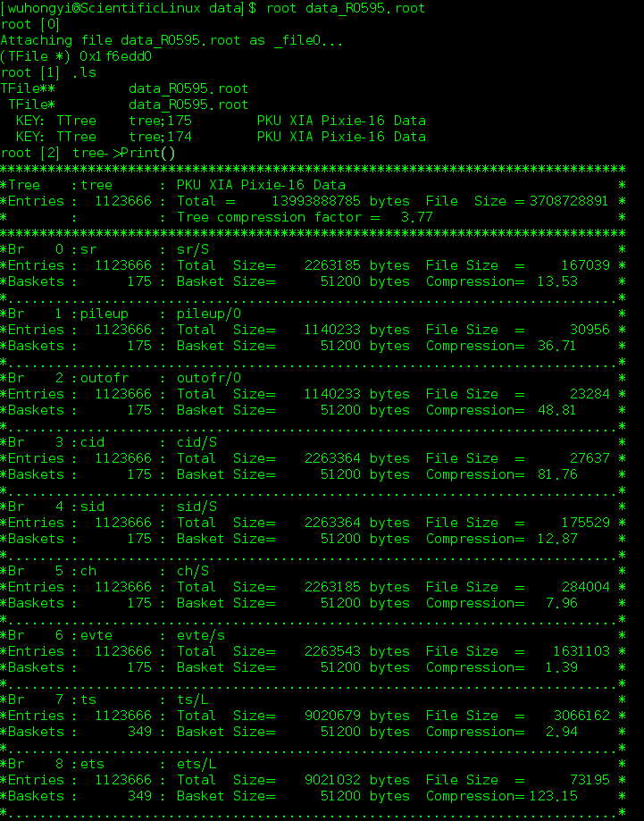
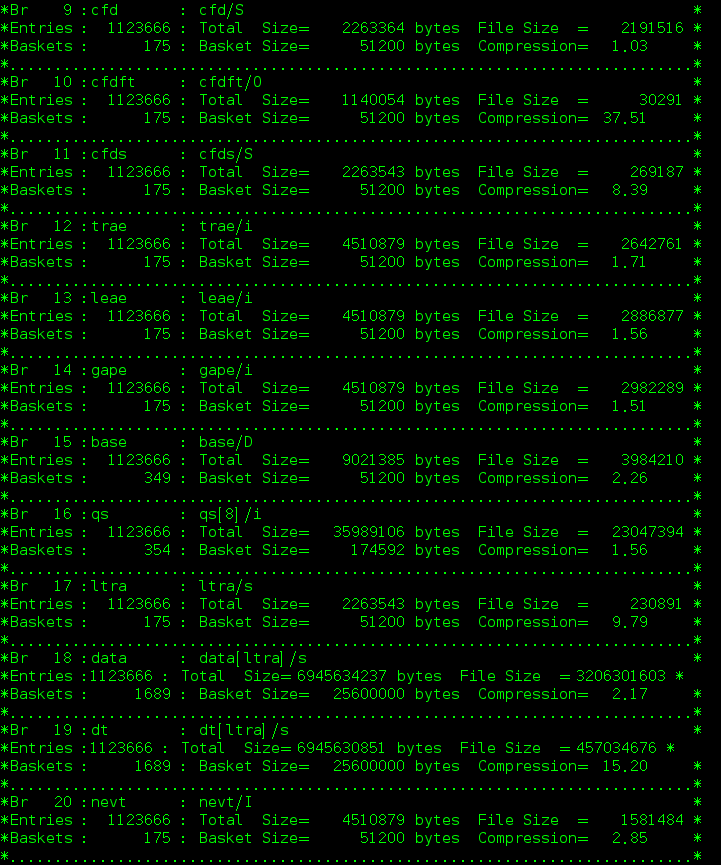

Decode¶
The Decode program is used to convert data collected by different modules in the same run into a ROOT file. The user’s physical analysis is based on the ROOT file generated by the program.
The user first needs to modify the definition in the UesrDefine.hh file.
#define RAWFILEPATH "/home/wuhongyi/data/" //The path of the original binary
#define RAWFILENAME "data" //The filename of the original binary
#define ROOTFILEPATH "/home/wuhongyi/data/" //The path to generate the ROOT file
#define TimesHist 3600 // second Histogram parameters should be set longer than the running time of the run.
#define Crate0
#define Crate0num 5 //Number of modules used in this crate
const int Crate0SamplingRate[Crate0num] = {100,100,100,250,250};//Specify the sampling rate for each module separately, 100/250/500 three sampling rates, 0 means skipping the module.
Users need to modify the following concents:
The directory where the original binary files are stored.
The directory where the generated ROOT files are stored.
File name.
Number of modules used in the crate.
The sampling frequency corresponding to each module. If the sampling frequency is set to 0, the data of the module is ignored.
After modifying, execute the following command to compile the program:
make clean
make
After the compilation is successful, an executable file decode will be generated, and the program will run as follows:
./decode [RuNnumber]
[RuNnumber] is the file run number you want to convert.
For example:
./decade 3
ROOT File Branch：
sr(short): sample rate，100/250/500，This value is specified in UesrDefine.hh.
pileup(bool): pile-up flag
outofr(bool): the overrange flag
cid(short): crate number
sid(short): slot number
ch(short): channel number
evte(unsigned short): energy
ts(long int 64 bit): timestamps
ets(long int 64 bit): external timestamps
cfd(short): cfd value
cfdft(bool): Is the cfd value valid? yes or no
cfds(short):cfd source，only for 250/500 MHz modules
trae(unsigned int): energy trapezoidal rising segment integral
leae(unsigned int): energy trapezoidal falling segment integral
gape(unsigned int): energy trapezoidal gaps segment integral
base(double):the baseline of the energy trapezoidal algorithm
qs(unsigned int): the integral of eight QDC areas
ltra(unsigned short): number of waveform acquisition points
data(unsigned short): waveform data
dt(unsigned short): In order to view each waveform directly, an array of values from 0 - N-1 is added
nevt(unsigned int): the number of this event in this ROOT file
The following figure shows the Branch definition in a file:
 At the end of each run of data conversion, a txt file will be generated in this folder, which counts the following information for each channel of the modules:
Mod: Module number, starting from 0.
Channel: Channel marker, 0 - 15.
OutOfRange: Number of events whose signal amplitude exceeds the range of the analog-to-digital conversion module.
Pileup: Number of events marked as pile-up.
CfdForcedTrigger: Number of events forced by cfd (cfd does not exceeded threshold).
Energy->0: Calculate the number of events with trapezoidal energy less than 0 (the result is less than 0 and is directly marked as 0).
WaveformCount: Number of events recording the waveform.
TotalEvent: Total number of output events.
At the end of each run of data conversion, a ROOT file is generated in this folder, which counts the counting rate of each channel of all the modules.